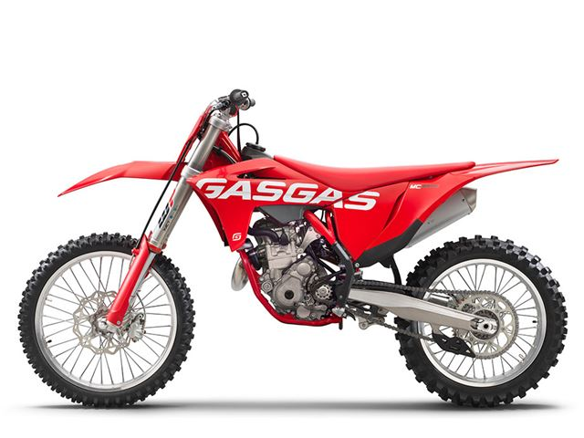

The MC 250F caters for a huge range of riders so whether you're just starting out and hitting the local tracks, or chasing after championships titles, this bike is for you! With a compact motor creating peak power at 14,000rpm it goes without saying that this thing absolutely rips.The performance our compact 250cc motor kicks out is nothing short of incredible. That's all thanks to clever manufacturing that allows 46hp to be squeezed from the 25.9kg power unit when revved at 14,000 rpm. As well as its awesome power, the compact design also improves the overall handling of the bike
